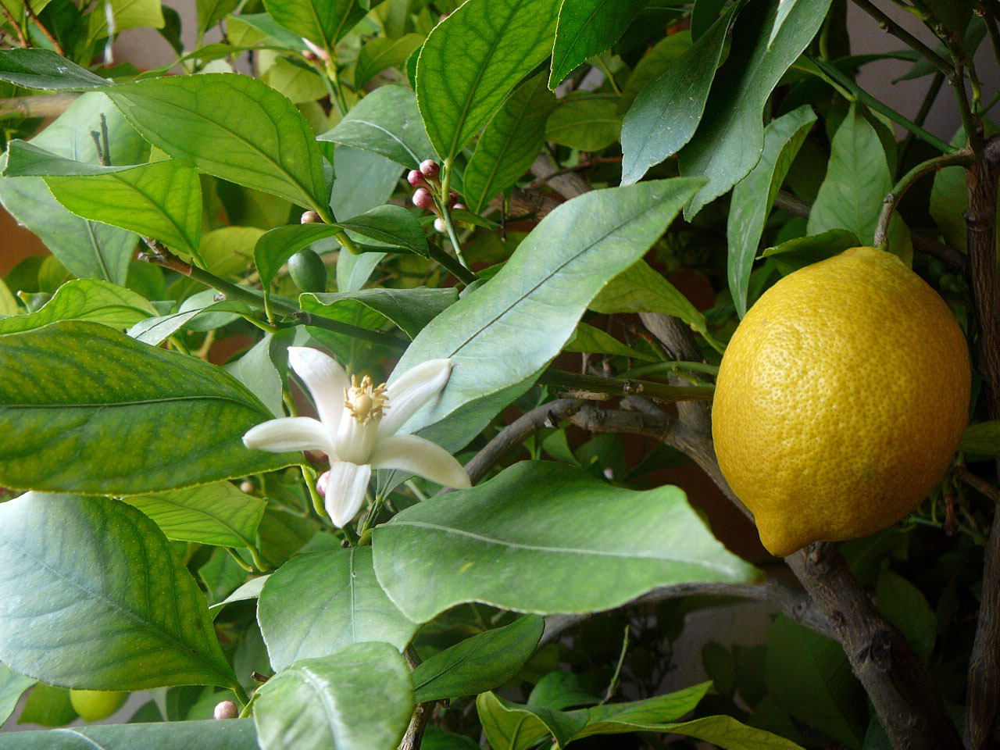

Read View Source View History Tools
From Wikipedia, the free encyclopedia
This article is about the fruit. For other uses, see Lemon (disambiguation).The lemon (Citrus X limon) is a species of small evergreen tree in the flowering plant family Rutaceae, native to Asia, primarily Northeast India (Assam), Northern Myanmar, or China
The tree's ellipsoidal yellow fruit is used for culinary and non-culinary purposes throughout the world, primarily for its juice, which has both culinary and cleaning uses.[2] The pulp and rind are also used in cooking and baking. The juice of the lemon is about 5-6% citric acid,[citation needed] with a pH of around 2.2,[3] giving it a sour taste. The distinctive sour taste of lemon juice, derived from the citric acid, makes it a key ingredient in drinks and foods [4] such as lemonade and lemon meringue pie
Lemon
The origin of the lemon is unknown, though lemons are thought to have first grown in Assam (a region in northeast India), northern Myanmar, or China. [2][failed verification] A genomic study of the lemon indicated it was a hybrid between bitter orange (sour orange) and citron.[5][6]
Lemons are supposed to have entered Europe near southern Italy no later than the second century AD, during the time of Ancient Rome. [2] They were later introduced to Persia and then to Iraq and Egypt around 700 AD. [2] The lemon was first recorded in literature in a 10th-century Arabic treatise on farming and was also used as an ornamental plant in early Islamic gardens. [2] It was distributed widely throughout the Arab world and the Mediterranean region between 1000 and 1150. [2] An article on Lemon and lime tree cultivation in Andalusia, Spain, is brought down in Ibn al-'Awwam's 12th-century agricultural work, Book on Agriculture.[7]